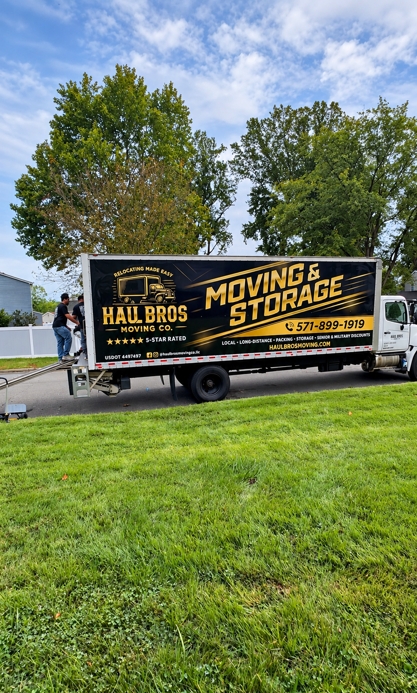

Finding affordable and reliable movers in Fairfax County, Virginia, shouldn't mean sacrificing professionalism, quality, or the safety of your belongings.
Whether you're moving from an apartment in Fairfax to a townhouse in Centreville, relocating your family from Springfield to Burke, or moving into a new home in Chantilly, choosing the right moving company can make the difference between a stressful experience and an organized relocation.
But with so many moving companies advertising cheap rates, five-star service, and affordable moving packages, how do you know which company to trust?
At Haul Bros Moving Co LLC, we believe customers deserve transparent pricing, careful furniture handling, professional service, and clear communication throughout their move.
This comprehensive guide explains how to compare moving companies, understand moving costs, avoid hidden fees, and find dependable moving services throughout Fairfax County.
Quick Answer: How Do You Find Affordable and Reliable Movers in Fairfax County, VA?
The best way to find affordable and reliable movers in Fairfax County is to compare written estimates, verify appropriate licensing and insurance, review recent customer feedback, understand what is included in the price, and choose a moving company with experience handling your type of move.
Before hiring a mover, make sure you:
- Request a detailed written moving estimate.
- Verify the company's applicable moving authority and insurance.
- Read recent customer reviews.
- Ask whether the company charges additional fees.
- Confirm whether furniture protection and equipment are included.
- Compare crew sizes and estimated moving times.
- Review the company's damage protection options.
- Confirm your moving date and arrival window.
For customers seeking affordable moving services in Fairfax County, Haul Bros Moving Co LLC offers transparent hourly pricing, professional moving crews, and flexible service options for local residential and commercial relocations.
Call (571) 899-1919 or visit www.haulbrosmoving.com to request a free moving estimate.
1. What Makes a Moving Company Affordable and Reliable?
Many customers assume the most affordable moving company is simply the one offering the lowest hourly rate.
However, the lowest advertised rate doesn't always result in the lowest final moving bill.
A moving company advertising $120 per hour may appear cheaper than one charging $159 per hour. But the actual total depends on crew size, moving speed, minimum hours, additional fees, equipment, and service quality.
A reliable moving company should provide:
- Clear, written pricing.
- An appropriately sized moving crew.
- Proper furniture protection.
- Professional loading and unloading.
- Suitable moving equipment.
- Clear arrival windows.
- Responsive customer communication.
- Appropriate licensing and insurance.
- Transparent damage protection terms.
Affordable Moving Is About Total Value
Consider two hypothetical moving companies:
Company A
- Advertised rate: $120 per hour.
- Moving time: 6 hours.
- Additional equipment and transportation fees: $150.
- Total: $870.
Company B
- Advertised rate: $159 per hour.
- Moving time: 5 hours.
- No additional equipment or transportation fees.
- Total: $795.
Although Company B has a higher hourly rate, its final bill is lower.
These examples are hypothetical and do not represent verified competitor pricing.
The lesson is simple: Compare the complete estimated moving cost, not just the hourly rate.
2. How Much Do Movers Cost in Fairfax County, VA?
One of the most common questions people ask is:
"How much does it cost to hire movers in Fairfax County, Virginia?"
Moving costs vary depending on home size, crew size, distance, accessibility, inventory, and the time required.
At Haul Bros Moving Co LLC, we offer the following standard moving rates for qualifying local moves.
Haul Bros Moving Co LLC — Standard Moving Rates
| Moving Service | First 2 Hours | Additional Hour |
|---|---|---|
| 2 Movers + 26-Foot Truck | $395 | $159 |
| 3 Movers + 26-Foot Truck | $495 | $189 |
| 4 Movers + 26-Foot Truck | $695 | $249 |
| 2 Movers — Labor Only | $295 | $125 |
All standard moving services have a two-hour minimum. Additional time is billed according to the terms of the written estimate.
These are Haul Bros' standard advertised rates, not an independently verified Fairfax County market average. The applicable quote must also comply with any governing tariff or regulatory requirements.
Example 1: One-Bedroom Apartment Move in Fairfax
A customer is relocating from a one-bedroom apartment in Fairfax to another apartment nearby.
Assume the move requires two movers and takes four hours.
First two hours: $395 Additional two hours: $318
Illustrative total: $713
Example 2: Two-Bedroom Townhouse Move in Springfield
A family is moving from a two-bedroom townhouse in Springfield to a home in Burke.
Assume three movers complete the move in five hours.
First two hours: $495 Additional three hours: $567
Illustrative total: $1,062
Example 3: Larger Home Move in Chantilly
A household is moving from a larger home in Chantilly to another property in Centreville.
Assume four movers complete the move in seven hours.
First two hours: $695 Additional five hours: $1,245
Illustrative total: $1,940
These examples are planning illustrations only. They are not guaranteed prices or durations. Actual charges depend on the written estimate, approved services, and applicable billing terms.
What Is Included With Haul Bros Moving Services?
Our standard moving services include:
- Professional moving crew.
- Moving truck when selected.
- Furniture moving blankets.
- Shrink wrap for appropriate furniture.
- Dollies and standard moving equipment.
- Basic floor protection.
- Qualifying furniture disassembly and reassembly.
- Loading and unloading.
- Furniture placement at the destination.
We emphasize transparent pricing without separate standard fees for stairs, elevators, fuel, or routine moving equipment.
Additional services, specialty handling, packing materials, or unusual project requirements should be discussed before booking.
3. How to Verify a Moving Company in Virginia
Before hiring any moving company in Fairfax County, check whether it has the appropriate authority to perform your specific move.
Verify Virginia Moving Authority
Virginia regulates different types of intrastate moving operations through the Virginia Department of Motor Vehicles.
For example, household goods transportation within Virginia may require Property Carrier or Household Goods Carrier authority, depending on the distance and nature of the service.
You can review the state's requirements and search approved transportation providers through the Virginia DMV.
Official resource: https://www.dmv.virginia.gov/businesses/motor-carriers/auth-mc
Check Interstate Moving Registration
If you're moving from Fairfax County to another state, verify that the company has the appropriate interstate household goods authority.
The Federal Motor Carrier Safety Administration provides a public database for reviewing interstate moving company registrations and complaint information.
Official resource: https://www.fmcsa.dot.gov/protect-your-move
Ask About Insurance and Valuation Coverage
A moving company should be able to explain its applicable insurance and the protection available for your belongings.
Haul Bros Moving Co LLC maintains business insurance and offers applicable moving valuation protection, subject to the terms of the move.
Customers should review the written coverage terms carefully, especially when transporting valuable furniture, electronics, antiques, or specialty items.
Important: A USDOT number alone does not establish that a company holds every state or federal operating authority needed for a particular move.

4. Read Customer Reviews Before Hiring Movers
Online reviews can help you understand how a moving company communicates, handles furniture, arrives on schedule, and responds when something goes wrong.
When researching movers in Fairfax County, look beyond the overall star rating.
Pay attention to reviews mentioning:
Professionalism: Were the movers courteous, organized, and respectful?
Furniture Protection: Did the crew use blankets, wrapping materials, and appropriate equipment?
Efficiency: Did customers describe the crew as productive and well-prepared?
Communication: Did the company provide arrival updates and answer questions?
Pricing Transparency: Did the final charges align with the explained pricing structure?
Problem Resolution: How did the company respond when a customer reported a concern?
What Makes Reviews Trustworthy?
Look for detailed descriptions of actual moving experiences rather than relying exclusively on short, generic praise.
Recent reviews and reviews involving similar home sizes or moving circumstances can be especially helpful.
For Haul Bros Moving Co LLC, customers can search our business name on Google to review available customer feedback.
5. Why Hiring Local Movers in Fairfax County Can Be Beneficial
Fairfax County includes a variety of residential environments, from apartment communities and condominiums to townhouses, single-family homes, and multistory properties.
Each type of move presents different logistical challenges.
Apartment Moving in Fairfax and Reston
Apartment moves may require:
- Elevator reservations.
- Loading dock coordination.
- Parking arrangements.
- Long hallways.
- Building access instructions.
- Certificate-of-insurance documentation.
Townhouse Moving in Centreville, Burke, and Springfield
Townhouse moves commonly involve multiple floors, narrow stairways, and furniture that may require disassembly.
A moving crew should assess the inventory and access before recommending the appropriate number of movers.
Single-Family Home Moving in Chantilly and McLean
Larger households may have multiple bedrooms, basement furniture, garage contents, patio furniture, and specialty items.
These moves often benefit from a more detailed pre-move inventory and careful crew planning.
Condominium Moving in Tysons and Vienna
Condominium buildings may have designated moving hours, service elevator requirements, and loading restrictions.
Customers should confirm building rules before scheduling.
A moving company familiar with Northern Virginia's different property types can help customers identify practical moving-day requirements in advance.
6. Affordable Moving Services Available in Fairfax County
Not every move requires the same crew size, truck, or level of service.
Haul Bros Moving Co LLC offers several moving solutions.
Local Residential Moving
For customers relocating between apartments, townhouses, condominiums, and single-family homes.
Long-Distance Moving
For qualifying moves beyond the local service area, subject to the required operating authority and project arrangements.
Apartment and Condo Moving
Assistance with apartment furniture, boxes, appliances, and building access coordination.
Townhouse Moving
Moving services for multilevel properties, including qualifying furniture disassembly and reassembly.
Packing and Unpacking
Packing assistance for customers who need help preparing household belongings for transportation.
Labor-Only Moving
Professional loading and unloading assistance for customers using rental trucks, storage containers, or their own transportation.
Senior Moving
Moving assistance for older adults downsizing, relocating, or transitioning to a different residence.
Military and PCS Moving
Moving services for eligible military families and service members, with a 5% military discount.
Office and Commercial Moving
Relocation of approved office furniture, workplace equipment, supplies, and business contents.
Specialty-Item Moving
Transportation of qualifying pianos, heavy furniture, and oversized items following an assessment of the item's dimensions, weight, and access requirements.
7. How to Save Money on Your Fairfax County Move
Moving doesn't have to mean paying for unnecessary services.
Here are practical ways to manage your moving budget.
Declutter Before Moving Day
Sell, donate, recycle, or dispose of belongings you no longer need.
Fewer items can mean less packing, loading, and unloading time.
Pack Nonessential Items Early
If you choose to pack your own belongings, prepare boxes before the movers arrive.
Use sturdy boxes and label them by room.
Disassemble Only What Is Appropriate
Ask your moving company which furniture should be disassembled ahead of time and which pieces the crew will handle.
Reserve Elevators and Parking
Prevent delays by arranging access before the scheduled arrival window.
Provide an Accurate Inventory
Tell your moving company about large furniture, heavy items, stairs, elevators, and any additional services.
Choose the Right Crew Size
Two movers may be suitable for smaller jobs, while three or four movers can be more efficient for larger moves.
The right crew depends on the inventory and property conditions.
Ask About Available Discounts
Haul Bros Moving Co LLC offers eligible customers:
- 5% military discount.
- 5% senior discount.
- 5% student discount.
Confirm discount eligibility and application when requesting your quote.
8. Fairfax County Moving Guide: Areas We Serve
Haul Bros Moving Co LLC serves customers throughout Fairfax County and surrounding Northern Virginia communities.
Fairfax, VA
We provide moving services for apartment, condominium, townhouse, and residential relocations in Fairfax and nearby communities.
Chantilly, VA
Customers moving to or from Chantilly can request professional local moving, packing, and furniture transportation services.
Centreville, VA
We assist Centreville residents with townhouse moves, apartment relocations, and other qualifying moving projects.
Burke, VA
Our moving services support customers relocating within Burke or moving to surrounding communities.
Springfield, VA
From apartment moves to multilevel townhouse relocations, we help Springfield customers plan organized moving services.
Annandale, VA
Haul Bros provides residential moving, furniture transportation, and packing assistance for customers in Annandale.
Tysons, VA
We assist with qualifying apartment, condominium, and commercial relocations in Tysons, including moves requiring advance building coordination.
Vienna, VA
Customers in Vienna can request local moving services, packing assistance, and furniture moving.
McLean, VA
For customers moving larger homes or specialty furniture, we can assess inventory and recommend suitable crew arrangements.
Reston, VA
Our services include apartment, condo, townhouse, and household moving assistance in Reston.
Herndon, VA
We provide moving services for eligible residential and business relocations in Herndon.
Lorton, VA
Haul Bros assists customers with local residential, commercial, and labor-only moving needs in Lorton.
Additional Fairfax County Communities
Our service coverage also includes Great Falls, Oakton, Merrifield, Clifton, Falls Church-area communities, Mount Vernon, and other nearby neighborhoods.
Looking for movers near Fairfax County? Contact Haul Bros Moving Co LLC to confirm service availability for your pickup and delivery locations.
9. Seven Red Flags to Watch for When Hiring Movers
Choosing a moving company without researching it can expose you to avoidable problems.
Watch for these warning signs:
1. No written estimate. A company that refuses to explain its pricing in writing may leave customers uncertain about charges.
2. Unclear business information. Verify the company's legal name, contact information, and relevant operating authority.
3. Unexplained fees. Ask whether transportation, stairs, elevators, packing, equipment, and additional labor are included.
4. Unrealistically low estimates. A quote substantially below competing estimates may be incomplete or based on inaccurate inventory assumptions.
5. Poor communication. Repeatedly unanswered questions before booking can indicate potential coordination problems.
6. No explanation of damage protection. Customers should understand applicable valuation coverage and claims procedures.
7. Pressure to sign incomplete documents. Review the estimate, service agreement, and payment terms before signing.
The Federal Motor Carrier Safety Administration recommends obtaining written estimates, checking the mover's credentials, and reviewing complaint information for interstate moves.
10. Why Choose Haul Bros Moving Co LLC for Your Fairfax County Move?
When comparing moving companies in Fairfax County, customers deserve more than an attractive hourly rate.
They deserve a team that respects their time, home, belongings, and budget.
At Haul Bros Moving Co LLC, our approach is built around:
Transparent Moving Rates
We explain our standard pricing, minimum booking requirements, and applicable additional services before the move.
Professional Furniture Protection
We use moving blankets, shrink wrap, dollies, and appropriate handling techniques to help protect furniture during transportation.
Flexible Moving Crews
We offer multiple crew configurations for qualifying moves based on home size, inventory, and project requirements.
Furniture Disassembly and Reassembly
Our standard services include applicable furniture disassembly and reassembly.
Local Northern Virginia Service
Based in the Woodbridge area, we serve customers across Fairfax County, Prince William County, Stafford County, Loudoun County, Arlington, Alexandria, and surrounding communities.
Clear Communication
We provide scheduling details, arrival windows, and customer assistance throughout the moving process.
Customer-Focused Service
We aim to make moving easier through preparation, efficiency, careful handling, and professional communication.
Our mission is simple: Relocating made easy.
11. Frequently Asked Questions About Movers in Fairfax County, VA
How much do movers cost per hour in Fairfax County?
Rates depend on the moving company, crew size, and services included. Haul Bros Moving Co LLC offers a standard two-mover-and-truck package starting at $395 for the first two hours, with additional time at $159 per hour for qualifying local moves.
What is the cheapest way to move within Fairfax County?
For smaller moves, packing your own boxes, decluttering, and using labor-only assistance when you already have transportation may reduce costs. Compare the complete expense of truck rental, fuel, equipment, labor, and time before deciding.
Are two movers enough for a two-bedroom apartment?
Two movers may be sufficient for some two-bedroom apartments, depending on furniture quantity, stairs, elevators, and distance. Three movers may be more efficient for larger inventories or difficult access.
How much does it cost to move a three-bedroom house in Fairfax County?
The total depends on the amount of furniture, number of movers, travel, access conditions, and moving duration. A detailed inventory assessment is the best way to obtain a useful estimate.
Do movers charge extra for stairs in Fairfax, VA?
Some companies may charge stair-related fees. Haul Bros does not impose a separate standard stair fee, although stairs can increase the total time needed for an hourly move.
Can movers help with a same-day move in Fairfax County?
Same-day and last-minute moving services may be available depending on crew and truck scheduling. Contact the company as soon as possible to confirm availability.
Do moving companies provide moving blankets and shrink wrap?
Many full-service movers provide protective materials. Haul Bros includes moving blankets, shrink wrap, dollies, and basic floor protection with applicable standard moving services.
Is it better to hire movers or rent a U-Haul?
Renting a truck may be economical for a small move if you have the time, equipment, and help needed. Professional movers provide trained labor and can reduce the physical work required. Compare total costs rather than truck rental prices alone.
How far in advance should I book movers in Fairfax County?
Two to four weeks is a practical target for many local moves. During busy periods or for larger moves, booking earlier can provide more scheduling flexibility.
Do movers in Fairfax County offer military discounts?
Some moving companies offer military discounts. Haul Bros Moving Co LLC offers an eligible 5% military discount, subject to confirmation at booking.
Can movers move a piano or heavy safe?
Specialty items require individual evaluation. Provide dimensions, approximate weight, photos, and access information so the company can determine whether it can safely handle the item.
Do movers offer packing and unpacking services?
Yes. Haul Bros offers packing and unpacking assistance for qualifying household moves. Packing materials and additional labor should be included in your estimate.
What happens if movers damage my furniture?
Report damage promptly and review the moving agreement's valuation and claims provisions. Coverage depends on the applicable service and protection selected.
Can I hire movers just to load a moving truck?
Yes. Haul Bros offers labor-only moving assistance, including a standard two-mover package starting at $295 for the first two hours.
Do I need to pay a deposit to reserve movers?
Haul Bros generally requires a $100 reservation deposit, applied toward the moving balance. The standard policy provides for refunds with more than 48 hours' notice, while deposits are generally nonrefundable within 48 hours. Review the written reservation terms for your specific booking.
How do I find reliable movers near Chantilly, Centreville, or Springfield?
Start by verifying licensing and insurance, reviewing recent customer feedback, comparing written estimates, and confirming what services are included. Haul Bros Moving Co LLC serves these communities and offers free moving estimates.
Is Haul Bros Moving Co LLC available throughout Fairfax County?
Haul Bros serves Fairfax County communities including Fairfax, Chantilly, Centreville, Burke, Springfield, Annandale, Vienna, Tysons, Reston, Herndon, McLean, and Lorton. Availability depends on the moving date and project requirements.
12. Get a Free Moving Estimate in Fairfax County, Virginia
Whether you're moving across Fairfax, relocating from Chantilly to Centreville, moving from Springfield to Burke, or preparing for a larger household move in McLean, Haul Bros Moving Co LLC is ready to discuss your moving needs.
We offer professional residential moving, packing, labor-only services, commercial relocation, and qualifying specialty-item transportation.
Contact Haul Bros Moving Co LLC
Haul Bros Moving Co LLC *Relocating made easy.*
Phone: (571) 899-1919 Email: info@haulbrosmoving.com Website: https://www.haulbrosmoving.com USDOT: 4497497
Serving: Fairfax County, Prince William County, Stafford County, Loudoun County, Arlington, Alexandria, Washington, DC, and surrounding Maryland communities.
Request Your Free Quote
To receive a moving estimate, provide:
- Your preferred moving date.
- Pickup and delivery ZIP codes or addresses.
- Home size and approximate inventory.
- Stairs, elevators, and access information.
- Any specialty items.
- Packing or additional service requirements.
Contact Haul Bros Moving Co LLC today and discover a more organized, transparent, and affordable approach to moving in Fairfax County, VA.
Final Thoughts: Finding the Right Movers in Fairfax County
Finding affordable and reliable movers in Fairfax County comes down to doing the right research.
Compare complete estimates, verify credentials, read customer reviews, understand damage protection, and choose a moving company that communicates clearly.
The best moving experience is not necessarily the one with the lowest advertised hourly rate. It is the one that provides appropriate service, predictable pricing, and careful handling for your particular move.
At Haul Bros Moving Co LLC, we work to provide that combination of value, professionalism, and customer-focused service throughout Northern Virginia.
Haul Bros Moving Co LLC — Relocating made easy.